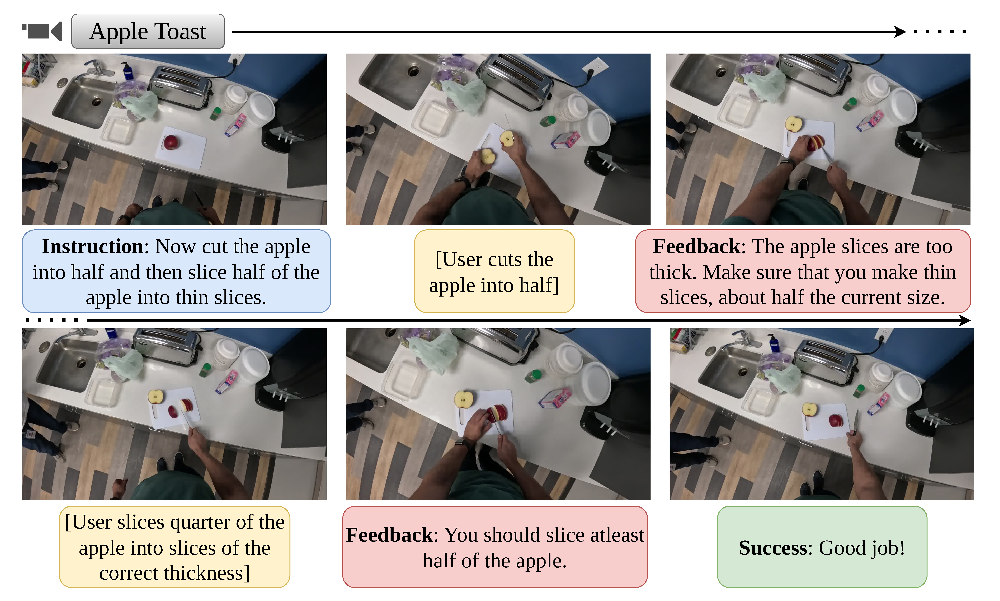
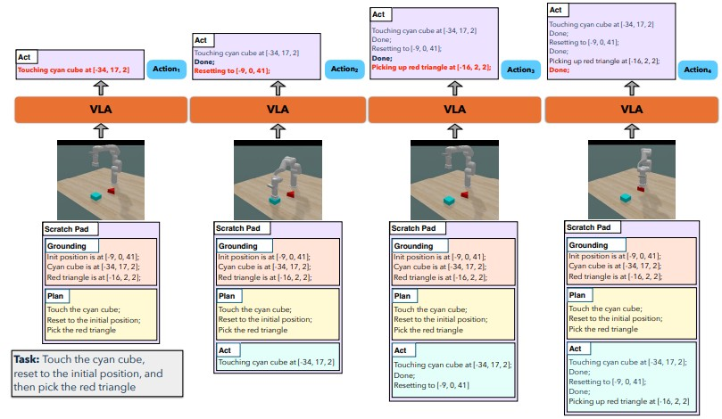
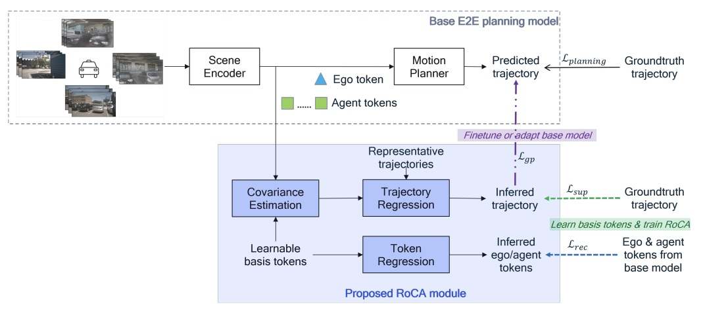
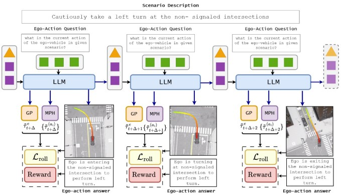
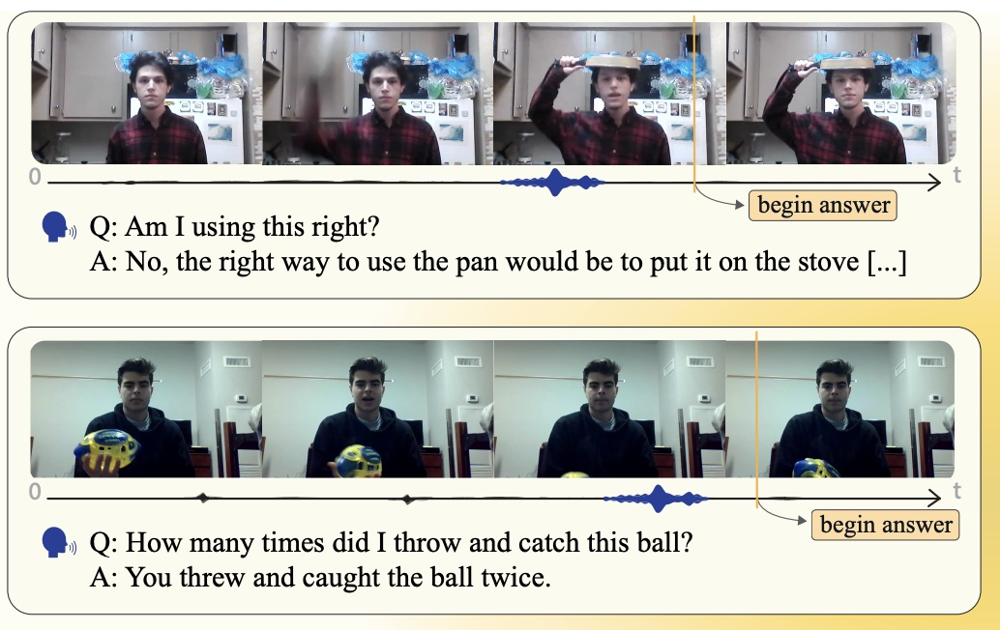
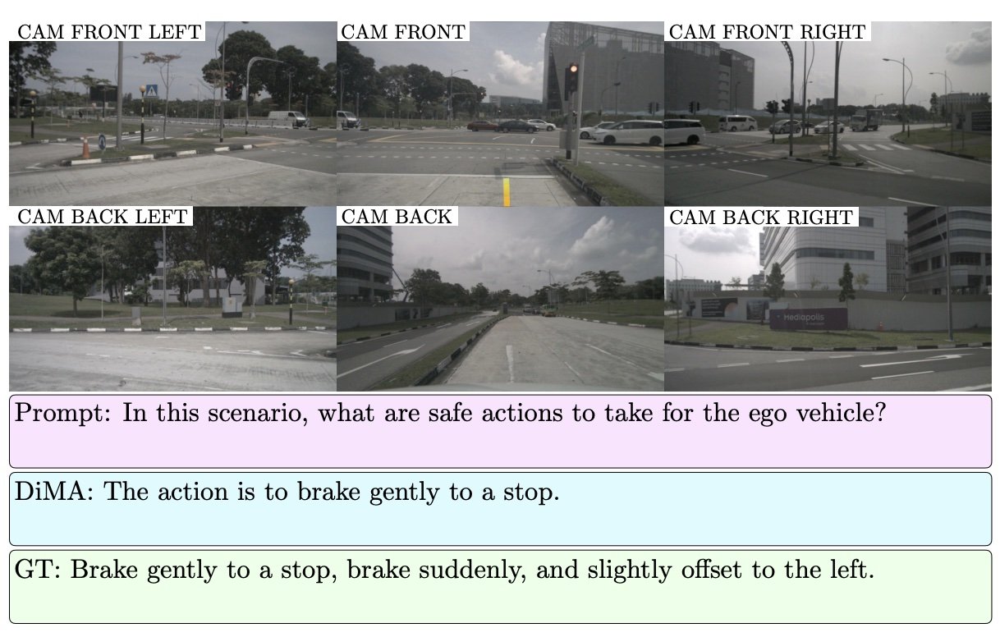
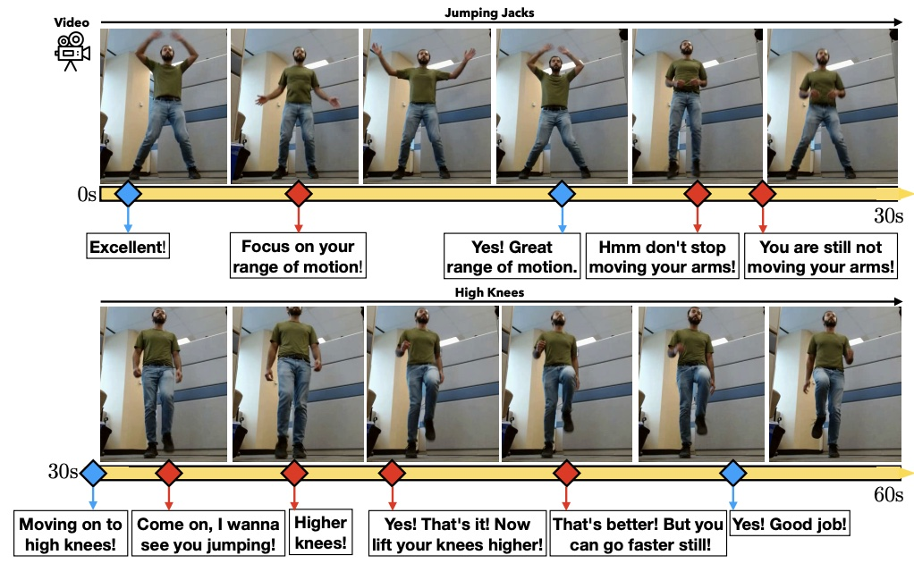
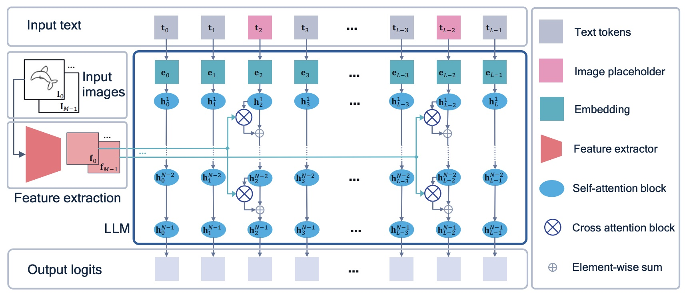

Biography

I am a Staff Machine Learning Researcher at Qualcomm AI Research. My research interests lie in the areas of Neural Reasoning, Embodied Systems and Generative Models. Previously, I was a Postdoc at the University of Tuebingen working in the Autonomous Vision Group under Prof. Dr. Andreas Geiger. Before that I was a PhD student at the Max Planck Institut für Informatik, Saarbrücken, advised by Prof. Dr. Bernt Schiele and Prof. Dr. Mario Fritz. I completed my Master’s Thesis at Saarland University under the supervision of Dr. Jilles Vreeken in the area of Algorithmic Data Mining and my Bachelors degree at the National Institute of Technology, Karnataka, India.
News
- 08/06/2026Just released Ego-MC-Bench and Ego-CoMist.
- 30/04/2026One paper accepted to ICML 2026.
- 09/03/2026Blog post arguing for interactive task guidance as a testbed for real-world multimodal intelligence.
- 09/03/2026Consolidated page for CVPR 2026 challenges which uses QEVD here.
- 01/03/2026Presenting Qualcomm Live Cooking Dataset at ICBINB and MMIntelligence @ ICLR 2026.
- 31/01/2026One paper accepted to ICRA 2026.
- 26/01/2026Two papers accepted to ICLR 2026.
- 21/12/2025Organizing the 2nd Workshop on Vision-based Assistants in the Real-World at CVPR 2026.
- 21/12/2025Co-organizing the 2026 IEEE Low Power Computer Vision Challenge at CVPR 2026.
- 02/12/2025Qualcomm Live Cooking Dataset to be presented at NeurIPS 2025.
Blog Posts
-
 Interactive Task Guidance as a Testbed for Multimodal Intelligence
Interactive Task Guidance as a Testbed for Multimodal IntelligenceWhy continuous, streaming task guidance is a stronger benchmark for real-world multimodal assistants than turn-based chat.
April 2026
Publications
-

Apratim Bhattacharyya, Shweta Mahajan, Sanjay Haresh, Rajeev Yasarla, Reza Pourreza, Litian Liu, Risheek Garrepalli, Roland Memisevic Streaming Interventions: Can Video Large Language Models Correct Mistakes as They Occur? arXiv, 2026. Paper; Project Page -

Sanjay Haresh, Daniel Dijkman, Apratim Bhattacharyya, Roland Memisevic Notes-to-Self: Scratchpad Augmented VLAs for Memory Dependent Manipulation Tasks. ICRA, 2026. Paper -

Rajeev Yasarla, Shizhong Han, Hsin-Pai Cheng, Apratim Bhattacharyya, Shweta Mahajan, Litian Liu, Yunxiao Shi, Risheek Garrepalli, Hong Cai, Fatih Porikli RoCA: Robust Cross-Domain End-to-End Autonomous Driving. ICML, 2026. Paper -

Rajeev Yasarla, Deepti Hegde, Shizhong Han, Hsin-Pai Cheng, Yunxiao Shi, Meysam Sadeghigooghari, Shweta Mahajan, Apratim Bhattacharyya, Litian Liu, Risheek Garrepalli, Thomas Svantesson, Fatih Porikli, Hong Cai Generative Scenario Rollouts for End-to-End Autonomous Driving. arXiv, 2026. Paper -

-
 Litian Liu, Reza Pourreza, Sunny Panchal, Apratim Bhattacharyya, Yao Qin, Roland Memisevic Enhancing Hallucination Detection through Noise Injection. ICLR, 2026. Paper
Litian Liu, Reza Pourreza, Sunny Panchal, Apratim Bhattacharyya, Yao Qin, Roland Memisevic Enhancing Hallucination Detection through Noise Injection. ICLR, 2026. Paper -
Apratim Bhattacharyya*, Bicheng Xu*, Sanjay Haresh, Reza Pourreza, Litian Liu, Sunny Panchal, Leonid Sigal, Roland Memisevic Can Multi-Modal LLMs Provide Live Step-by-Step Task Guidance? (*joint first authorship) NeurIPS, 2025. Paper; Project Page; Dataset Quick Start Guide
-

Deepti Hegde, Rajeev Yasarla, Hong Cai, Shizhong Han, Apratim Bhattacharyya, Shweta Mahajan, Litian Liu, Risheek Garrepalli, Vishal M Patel, Fatih Porikli Distilling Multi-modal Large Language Models for Autonomous Driving. CVPR, 2025. Paper -

Sunny Panchal* , Apratim Bhattacharyya*, Guillaume Berger, Antoine Mercier, Cornelius Böhm, Florian Dietrichkeit, Reza Pourreza, Xuanlin Li, Pulkit Madan, Mingu Lee, Mark Todorovich, Ingo Bax, Roland Memisevic What to Say and When to Say it: Live Fitness Coaching as a Testbed for Situated Interaction.(*joint first authorship) NeurIPS (D&B Track), 2024. Paper; Data; Code; Dataset Quick Start Guide -

-
 Apratim Bhattacharyya, Sunny Panchal, Mingu Lee, Reza Pourreza, Pulkit Madan, Roland Memisevic Look, Remember and Reason: Grounded Reasoning in Videos with Language Models. ICLR, 2024. Paper
Apratim Bhattacharyya, Sunny Panchal, Mingu Lee, Reza Pourreza, Pulkit Madan, Roland Memisevic Look, Remember and Reason: Grounded Reasoning in Videos with Language Models. ICLR, 2024. Paper -

Reza Pourreza, Apratim Bhattacharyya, Sunny Panchal, Mingu Lee, Pulkit Madan, Roland Memisevic Painter: Teaching Auto-regressive Language Models to Draw Sketches. ICCV Workshops, 2023. Paper -
 Niklas Hanselmann, Katrin Renz, Kashyap Chitta, Apratim Bhattacharyya, Andreas Geiger KING: Generating Safety-Critical Driving Scenarios for Robust Imitation via Kinematics Gradients. ECCV, 2022. (Oral) Paper; Project Page
Niklas Hanselmann, Katrin Renz, Kashyap Chitta, Apratim Bhattacharyya, Andreas Geiger KING: Generating Safety-Critical Driving Scenarios for Robust Imitation via Kinematics Gradients. ECCV, 2022. (Oral) Paper; Project Page -

-
 Apratim Bhattacharyya, Christoph-Nikolas Straehle, Mario Fritz, Bernt Schiele Haar Wavelet based Block Autoregressive Flows for Trajectories. GCPR, 2020. (Oral) Paper
Apratim Bhattacharyya, Christoph-Nikolas Straehle, Mario Fritz, Bernt Schiele Haar Wavelet based Block Autoregressive Flows for Trajectories. GCPR, 2020. (Oral) Paper -

-
 Ahmed Salem, Apratim Bhattacharyya, Michael Backes, Mario Fritz, Yang Zhang Updates-Leak: Data Set Inference and Reconstruction Attacks in Online Learning. USENIX Security, 2020. Paper
Ahmed Salem, Apratim Bhattacharyya, Michael Backes, Mario Fritz, Yang Zhang Updates-Leak: Data Set Inference and Reconstruction Attacks in Online Learning. USENIX Security, 2020. Paper -
 Apratim Bhattacharyya, Michael Hanselmann, Mario Fritz, Bernt Schiele, Christoph-Nikolas Straehle Conditional Flow Variational Autoencoders for Structured Sequence Prediction. ML4AD @ NeurIPS, 2019. (Oral) Paper
Apratim Bhattacharyya, Michael Hanselmann, Mario Fritz, Bernt Schiele, Christoph-Nikolas Straehle Conditional Flow Variational Autoencoders for Structured Sequence Prediction. ML4AD @ NeurIPS, 2019. (Oral) Paper -
 Apratim Bhattacharyya, Mario Fritz, Bernt Schiele Bayesian Prediction of Future Street Scenes using Synthetic Likelihoods. ICLR, 2019. Paper; Code + Data
Apratim Bhattacharyya, Mario Fritz, Bernt Schiele Bayesian Prediction of Future Street Scenes using Synthetic Likelihoods. ICLR, 2019. Paper; Code + Data -

-
 Apratim Bhattacharyya, Mario Fritz, Bernt Schiele Long-Term On-Board Prediction of People in Traffic Scenes under Uncertainty. CVPR, 2018. Paper; Code + Data
Apratim Bhattacharyya, Mario Fritz, Bernt Schiele Long-Term On-Board Prediction of People in Traffic Scenes under Uncertainty. CVPR, 2018. Paper; Code + Data -
 Apratim Bhattacharyya, Mateusz Malinowski, Bernt Schiele, Mario Fritz Long Term Image Boundary Prediction. AAAI, 2018. Paper
Apratim Bhattacharyya, Mateusz Malinowski, Bernt Schiele, Mario Fritz Long Term Image Boundary Prediction. AAAI, 2018. Paper -
 Apratim Bhattacharyya, Jilles Vreeken Efficiently Summarising Event Sequences with Rich Interleaving Patterns. SDM, 2017. Paper
Apratim Bhattacharyya, Jilles Vreeken Efficiently Summarising Event Sequences with Rich Interleaving Patterns. SDM, 2017. Paper